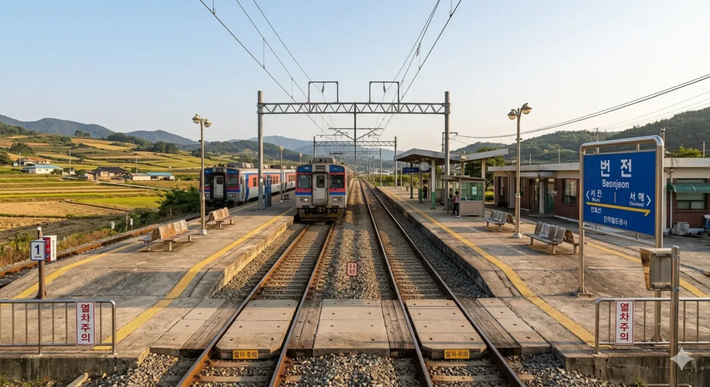

서해시 관문의 길목, 번전읍의 중심 철도역.
덕빈북도 서해시 번전읍 번전리에 위치한 빈효선의 철도역이다.
서진시와 서해시의 경계 부근에 위치하여 두 도시를 잇는 길목 역할을 한다. ITX-새마을과 ITX-마음 등 상위 등급 열차는 정차하지 않고 빠르게 통과하며, 오직 무궁화호 열차만이 정차하여 번전읍 주민들의 교통 편의를 담당하고 있다. 전형적인 시골 읍 소재지의 한적하고 평화로운 분위기가 특징이다.
1967년 2월 12일, 빈효선의 대대적인 노선 연장 및 개량 사업과 함께 영업을 개시하였다. 개업 당시에는 번전면의 작은 간이역이었으나, 이후 번전면이 번전읍으로 승격되면서 이용객이 소폭 증가하였다. 과거에는 인근 농경지에서 생산된 농산물을 효빈항으로 실어나르는 화물 거점 역 중 하나였으나, 현재는 화물 취급이 폐지되어 여객 중심의 배치간이역으로 명맥을 잇고 있다.
서해역으로 진입하기 전 마지막으로 거치는 읍 단위 소재지 역으로, 서해시의 외곽 주거지 역할을 겸하고 있다. 무궁화호 열차가 하루 왕복 10여 회 정차한다.

2면 2선의 상대식 승강장을 갖추고 있다. 역사에서 승강장으로 이동할 때 육교나 지하도가 아닌 평면 건널목을 이용해야 하므로, 열차 진입 시 안전 주의가 필요하다. 전철화 사업이 완료되어 전차선 가동선이 승강장 위를 가로지르며, 현대적인 스크린도어는 설치되어 있지 않아 탁 트인 풍경을 자랑한다.